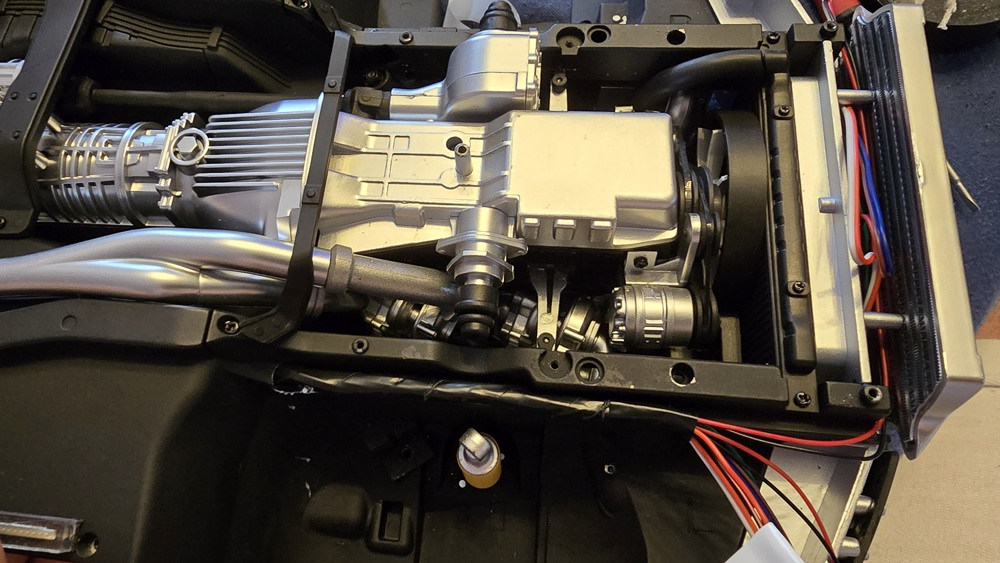
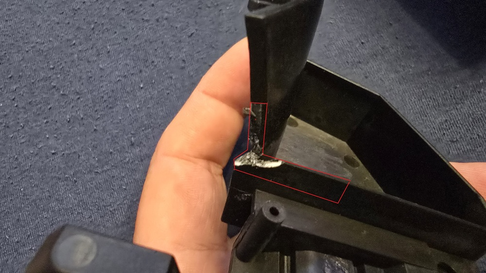
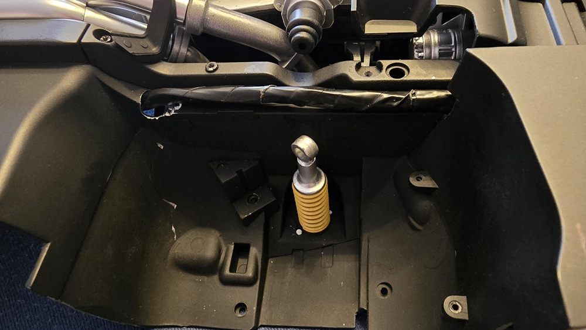
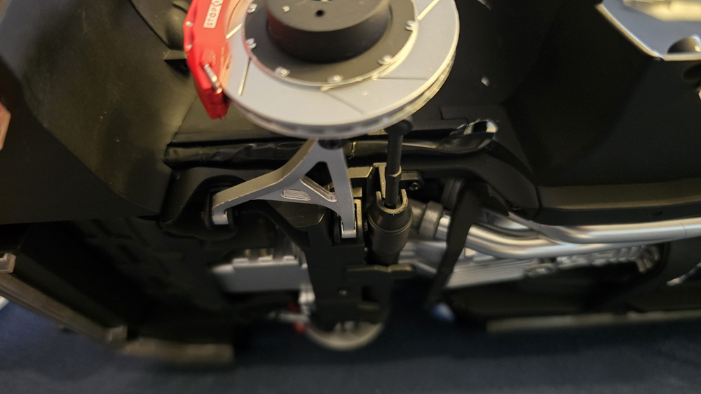
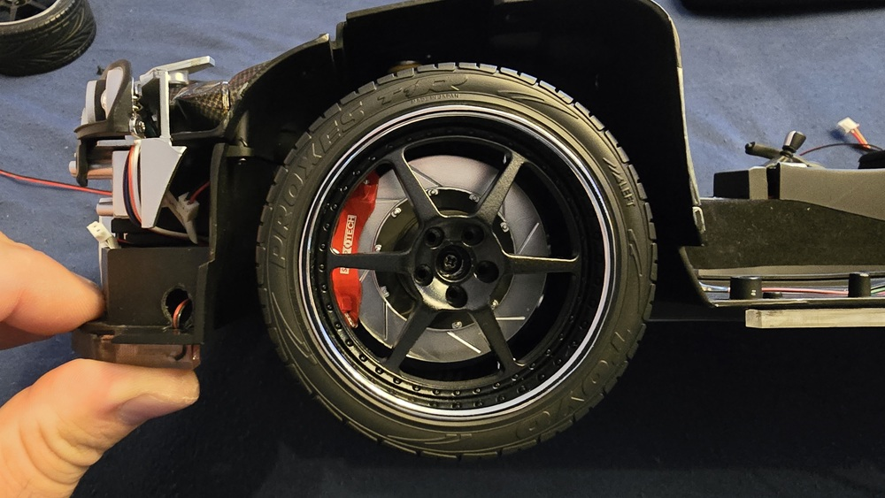

Figyelem!! Ebben a menüben
Csak a HOME visszalépés,
Illitve az OK leállitás müködik! FONTOS!! Mivel ez egy linux alapu számitógép,
a leállítás szükséges minden áramtalanítás elött!
Az eszközben nem esne kár de az sd kártya halálához vezethet!!
Motor előre.
FONTOS!!!! Szerepe nincs de elronthatja a gombkezelést. Elem behyelyezésekor automatikusan bekapcsol, ha elindult a rendszer nyomd meg egyszer, így ellenőrizd: Főképernyőn nyomd le valamelyik hangerő gombot, ha 1 sávot ugrik akkor jó. Ha folyamtosan fút a sáv, vagy az OK gomb nem reagál akkor bevan kapcsolva, nyomd meg a gombot mégegyszer! Ezt csak egyszer szükséges megcsinálni az írányító menti a beálitást!!
Motor hátra.
Menüben navigáció felfelé.
Menüben navigáció lefelé.
Menüben navigáció balra.
Menüben navigáció jobbra.
ENTER / Kiválasztás / Videók indítása.
Visszalépés a menübe.
Egy Klikk Visszatérés a kezdőképernyőre. Dupla Klikk: Kijelző és lejátszó újraindítása hiba esetén. Tripla Klikk: Ha az előző opcíó nem oldja meg a problémát, ez teljes újraindítást csinál.
Hangerő csökkentése.
Egy Klikk: Keresés indítása, ha nem megy automatikusan. Dupla Klikk: Váltás bluetooth hangra és vissza.
Hangerő növelése.
Visszafelé ugrás.
Belépés a menűbe.
Egy Klikk: sima lejátszás, videó végén visszatér a főképernyőre.
Dupla Klikk: folyamatos lejátszás végtelenül.
Dupla OK gombal indítva az adott videó megy loopban.
Előre ugrás.
Világítás kapcsoló 3 lépcsőben.
(Kiegészítő panel szükséges)
Egy Klikk: Alapjárat hang.
Dupla Klikk: "Gáz" hang.
(Kiegészítő panel szükséges)
Duda.
(Kiegészítő panel szükséges)
Bal index.
(Kiegészítő panel szükséges)
Vészvillogó.
(Kiegészítő panel szükséges)
Jobb index.
(Kiegészítő panel szükséges)
Alváz Neon.
Egy Klikk: Módváltás.
Dupla Klikk: Ki / Be kapcsolás.
Tripla Klikk: Sebesség állítás.
2 Neon egyszerre.
Egy Klikk: Módváltás.
Dupla Klikk: Ki / Be kapcsolás.
Tripla Klikk: Sebesség állítás.
Csomagtér Neon.
Egy Klikk: Módváltás.
Dupla Klikk: Ki / Be kapcsolás.
Tripla Klikk: Sebesség állítás.
Fék Lámpa.
(Kiegészítő panel szükséges)
Tolató Lámpa.
(Kiegészítő panel szükséges)
Rövid nyomás - ködlámpa.
(Kiegészítő panel szükséges)
Hosszú nyomás - Írányitó háttérvilágítás ki / be kapcsolás.
Kék: Gombnyomásra világít kb 5mp ig.
Fehér: Folyamatosan világít.
Rendszer áttekintése és Fontos Tudnivalók
Üdvözöllek a Nissan Skyline Ultimate Elektronics Board felületén!
Ez az oldal segít eligazodni a "Rendszer" telepítésével / beépítésével, lehetséges híbákkal, és funkcíokkal kapcsolatban.
Gombkiosztáshoz vidd az egeret a gombok fölé.
Pg+ és Pg- gombokkal 5v os dc motor vezérelhető pl az alábbi célokra:- Csomagtér nyítás (folyamatban a kidolgozása).
- Nitro purge utánzása "porlasztóval".
- Motor hűtőventilátor stb.
Kérlek miútán elindult a Logo a képernyőkön még várj 15 - 20mp et hogy betöltödjön biztosan minden. Sajnos még ennek ellenére is elöfordulhat ha belépsz a menübe sötétkép lehet. Erre megoldás hogy home gombal visszalépsz, vagy a nyilakkal lépegetsz.
Ezekre a késöbbiekben jönni fog frissités, ami távolról wifin keresztül lehetséges. nem igényel semilyen bontást az autón!
A legfontosabb veszélyforrás: A Légi Egér (Air Mouse)
Ami mindent elronthat!! Az elem behelyezésekor ez a funkció automatikusan bekapcsol. Ha elindult a rendszer, ellenőrizd !!
- A főképernyőn nyomd le valamelyik hangerő gombot. Ha a hangerő sáv pontosan 1 egységet ugrik, akkor minden rendben.
- Ha a sáv folyamatosan fut, vagy az OK gomb nem reagál, akkor a légi egér be van kapcsolva.
- Megoldás: Nyomd meg a légi egér gombot még egyszer a kikapcsoláshoz. Ezt csak egyszer kell elvégezni, az irányító menti a beállítást!
Biztonságos Leállítás
FIGYELEM!! Mivel egy Linux alapú számítógépen fut, kérjük minden áramtalanítás előtt figyelj a szabályos leállításra, hogy elkerüld az SD-kártya sérülését.


Kész müszerfal modul, dupla kijelzővel. Kesztyűtartó feletti egyedileg választható videoval.
Beépités a gyári leírás szerint. Készre szerelve kapod meg.

Csomagtartó modul. Beépités a gyári leírás szerint. Készre szerelve kapod meg.

Csomagtartó modul hátulról. Bal fenti 4 üres aljzatba csatlakoznak a gyári vagy a modósított neonok.
Motor aljzatba csatlakoztatható a fentebb említett 5V os DC motor.
Input 5V aljzat = Ez tartalék 5V kimenet lett nem használjuk jelenleg.


Fúrás helye, alulról és hátulról nézve a hangszóró bal oldalán a gyári vonalak közepén.

Fúrás helye, alulról a töréstől 8mm rel feljebb.

Fúrás átmérője 8mm.

Kész furat. Célszerű több lépcsőben fúrni 3mm > 5mm > 8mm. A 8mm esnél két oldalról fúrd, így nem kell sorjáznod.

Csatlakozó beszerelve. Kombinált fogóval húzd meg (ésszel), vigyázz a festésre.


Tápelosztó a piros +5V ot jelöli.

Tápelosztó helye, ragasztóval rögzül.

DC 5V Csatlakozó kábelelvezetés / A pontba csatlakoztatás.

Gyári A kábel átalakítva / B a gyári kapcsoló helyett szolgál (opcionális).

D pontba csatlakoztatása / ajánlott kábelelvezetés.
B pontba csatlakozik a csomagtartó.
C pontba csatlakozik a műszerfal.


Komplett Neonszett kábelekkel csatlakózokkal. 2 oldalú ragasztóval kerülnek rőgzítésre.

Hátsó Neon oldalsó pozicióját a 2 pirossal jelzett kiemelkedés adja meg, a hátsó falnak szoritsd neki és utána nyomd lefelé.
A végeredmény valahogy így néz ki.

Hátsó Neon kábelelvezetés / rögzítés.

Hátsó Neon miatt a 2 takaró elem általakítására van szükség 103 as számban találod 103A 103B Elem.

Első Neon pozicíóját a 2 kivágás adja meg. A továbbiakban fúrás szükséges.

Ragasztó eltávolitása elött illeszd oda és jelöld be a fúrás helyét, végeredmény hasonló kell legyen.
A csomagban kapott hosszú vezetéket vezesd el a gyári előre menő világítások melett és alul húzd ki.

Oldalsó Neonok. Hátsó pozicíóját a gyári kivágás és a neon kábelkívezetése adja meg.
Oldal írányban a 2 pirossal jelzett "fül" adja meg a pozíciot. eredetileg a leírás szerint csatlakozik ide pár kis müanyag alkatrész ez gyári állapotában nem fér el. Bekötési hely a főmodulok résznél.
Pár kész kép.


Jobb lámpa kábelezés, ragasztóval tekerj be kb 5cm es részt.

Így kell kinéznie.

Bal lámpa kábelezés, ragasztóval tekerj be kb 5cm es részt.

Így kell kinéznie.

A 2 lámpaközti vezetéket gyűrd a cooler mögé

Ide fúrj 1 lyukat 6mm elég lehet (enyém nem lett a legszebb).

Kábelelvezetés helye, ne felejtsd el a neon kábelét és itt elhúzni.

Tekerd be szigetelőszalaggal a képen látható módon.

Pirossal jelölve az eltávolitandó részek.

Kész is vagyunk.

Kereket felszerelve semmi nem látszik belőle, cserébe nyertünk 1 letisztult motorteret.



A külső perem 3 fülének letőrése ( közel tőbe megfogva fogoval szépen letörik).

Jöhet a középrész csiszolása belülről, (nyugodtan mehet köszörűn is) pirossal jelölt részek legyenk síkba.

A gyárilag előirt helyett AM csavarral szereld össze, Szemmel látható a különbség (bal oldalt).

Nyomtávszélesítő alátét is kapható hogy a helyén legyen a kerék :)

Ültetés annyibol áll hogy a rugóstagokat teljesen kihagyod, vagy pedig nem rögzited alul a felfügesztéshez.